0.1 Τριγωνομετρικοί αριθμοί γωνίας
0.1.1 Τριγωνομετρικοί Αριθμοί Οξείας Γωνίας
0.1.1.1 Ορισμοί (σε Ορθογώνιο Τρίγωνο)
Ορισμοί
Σε ένα ορθογώνιο τρίγωνο \(A B \Gamma\) (\(\hat{A} = 90^\circ\)), για μια οξεία γωνία \(\omega = \hat{B}\), ορίζουμε:
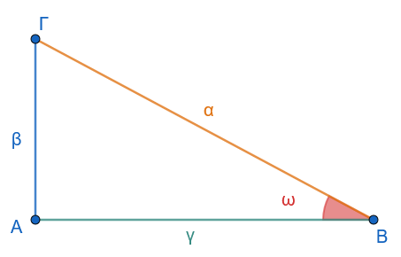
Ημίτονο (\(\eta\mu\omega\)): Ο λόγος της απέναντι κάθετης πλευράς προς την υποτείνουσα. \[\eta\mu\omega = \frac{\text{Απέναντι Κάθετη}}{\text{Υποτείνουσα}} = \frac{β}{a}\]
Συνημίτονο (\(\sigma\upsilon\nu\omega\)): Ο λόγος της προσκείμενης κάθετης πλευράς προς την υποτείνουσα. \[\sigma\upsilon\nu\omega = \frac{\text{Προσκείμενη Κάθετη}}{\text{Υποτείνουσα}} = \frac{γ}{a}\]
Εφαπτομένη (\(\epsilon\phi\omega\)): Ο λόγος της απέναντι κάθετης πλευράς προς την προσκείμενη κάθετη πλευρά. \[\epsilon\phi\omega = \frac{\text{Απέναντι Κάθετη}}{\text{Προσκείμενη Κάθετη}} = \frac{β}{γ}\]
Συνεφαπτομένη (\(\sigma\phi\omega\)): Ο λόγος της προσκείμενης κάθετης πλευράς προς την απέναντι κάθετη πλευρά. \[\sigma\phi\omega = \frac{\text{Προσκείμενη Κάθετη}}{\text{Απέναντι Κάθετη}} = \frac{γ}{β}\]
0.1.2 Τριγωνομετρικοί Αριθμοί Γωνίας \(\omega\) (\(0^\circ \le \omega \le 360^\circ\))
0.1.2.1 Ορισμοί σε Σύστημα Συντεταγμένων
Ορισμοί
Εργαστείτε και στα applets παρακάτω
Θεωρούμε ορθοκανονικό σύστημα συντεταγμένων \(O x y\). Η γωνία \(\omega\) παράγεται από την περιστροφή του θετικού ημιάξονα \(O x\) (αρχική πλευρά) γύρω από το \(O\) μέχρι την τελική ημιευθεία \(O p\) (τελική πλευρά).
Παίρνουμε ένα τυχαίο σημείο \(M(x, y)\) στην τελική πλευρά \(O p\) (διαφορετικό του \(O\)) με απόσταση από την αρχή των αξόνων \(\rho = (O M) = \sqrt{x^2 + y^2} > 0\).
Ορίζουμε τους τριγωνομετρικούς αριθμούς της γωνίας \(\omega\) ως εξής:
Ημίτονο: \(\eta\mu\omega = \dfrac{y}{\rho}\)
Συνημίτονο: \(\sigma\upsilon\nu\omega = \dfrac{x}{\rho}\)
Εφαπτομένη: \(\epsilon\phi\omega = \dfrac{y}{x}\) (εφόσον \(x \neq 0\))
Συνεφαπτομένη: \(\sigma\phi\omega = \dfrac{x}{y}\) (εφόσον \(y \neq 0\))
0.1.3 Τριγωνομετρικοί Αριθμοί Γωνιών Μεγαλύτερων των \(360^\circ\) και Αρνητικών Γωνιών
0.1.3.1 Γωνίες Μεγαλύτερες των \(360^\circ\)
Ορισμός
Αν ο ημιάξονας \(O x\) πραγματοποιήσει \(\nu\) πλήρεις περιστροφές κατά τη θετική φορά (\(\nu \cdot 360^\circ\)) και στη συνέχεια διαγράψει γωνία \(\mu\) (\(0^\circ \le \mu < 360^\circ\)), τότε διαγράφει γωνία \(\omega = \nu \cdot 360^\circ + \mu\).
0.1.3.2 Αρνητικές Γωνίες
Ορισμός
Αν η περιστροφή γίνει κατά την αρνητική φορά (ωρολογιακή), τότε η γωνία είναι αρνητική, της μορφής \(\omega = -(\nu \cdot 360^\circ + \mu)\).
0.1.3.3 Γωνίες της Μορφής \(k \cdot 360^\circ + \omega\) (\(k \in \mathbb{Z}\))
Ορισμός
Οι γωνίες της μορφής \(k \cdot 360^\circ + \omega\), με \(k \in \mathbb{Z}\), έχουν την ίδια αρχική (\(O x\)) και την ίδια τελική πλευρά (\(O p\)), οπότε έχουν ακριβώς τους ίδιους τριγωνομετρικούς αριθμούς:
\(\eta\mu(k \cdot 360^\circ + \omega) = \eta\mu\omega\)
\(\sigma\upsilon\nu(k \cdot 360^\circ + \omega) = \sigma\upsilon\nu\omega\)
\(\epsilon\phi(k \cdot 360^\circ + \omega) = \epsilon\phi\omega\)
\(\sigma\phi(k \cdot 360^\circ + \omega) = \sigma\phi\omega\)
Ακολουθήστε τις οδηγίες
Επιλέξτε τον δρομέα ω και με τα > ή < αλλάξτε την τιμή της γωνίας, ή Shift+<,> για μεγαλύτερη ακρίβεια.
Διερευνήστε τους τριγωνομετρικούς αριθμούς μεγάλων γωνιών.
0.1.4 Ο Τριγωνομετρικός Κύκλος
0.1.4.1 Ορισμός
Ορισμός
Τριγωνομετρικός κύκλος ονομάζεται ο κύκλος με κέντρο την αρχή των αξόνων \(O(0,0)\) και ακτίνα \(\rho = 1\).
0.1.4.2 Τριγωνομετρικοί Αριθμοί στον Τριγωνομετρικό Κύκλο
Ορισμοί
Αν η τελική πλευρά της γωνίας \(\omega\) τέμνει τον τριγωνομετρικό κύκλο στο σημείο \(M(x, y)\), επειδή \(\rho = 1\), ισχύει:
\(\eta\mu\omega = y\) (η τεταγμένη του σημείου \(M\))
\(\sigma\upsilon\nu\omega = x\) (η τετμημένη του σημείου \(M\))
Για το λόγο αυτό, ο άξονας \(y' y\) λέγεται άξονας των ημιτόνων και ο άξονας \(x' x\) λέγεται άξονας των συνημίτονων.
Ακολουθήστε τις οδηγίες
Επιλέξτε τον δρομέα ω και με τα > ή < αλλάξτε την τιμή της γωνίας, ή Shift+<,> για μεγαλύτερη ακρίβεια.
Διερευνήστε τα όρια τιμών και το πρόσημο. Είναι σύμφωνα με τα παρακάτω;
0.1.4.3 Μεταβολή και Όρια Τιμών
Επειδή το σημείο \(M(x,y)\) ανήκει στον κύκλο ακτίνας \(1\), ισχύει:
\(-1 \le \sigma\upsilon\nu\omega \le 1\)
\(-1 \le \eta\mu\omega \le 1\)
0.1.4.4 Πρόσημο Τριγωνομετρικών Αριθμών ανά Τεταρτημόριο
Το πρόσημο εξαρτάται από το τεταρτημόριο στο οποίο βρίσκεται η τελική πλευρά της γωνίας \(\omega\):
| Τεταρτημόριο | 1ο (\(0^\circ < \omega < 90^\circ\)) | 2ο (\(90^\circ < \omega < 180^\circ\)) | 3ο (\(180^\circ < \omega < 270^\circ\)) | 4ο (\(270^\circ < \omega < 360^\circ\)) |
|---|---|---|---|---|
| \(\eta\mu\omega\) | \(+\) | \(+\) | \(-\) | \(-\) |
| \(\sigma\upsilon\nu\omega\) | \(+\) | \(-\) | \(-\) | \(+\) |
| \(\epsilon\phi\omega\) | \(+\) | \(-\) | \(+\) | \(-\) |
| \(\sigma\phi\omega\) | \(+\) | \(-\) | \(+\) | \(-\) |
0.1.5 Ο Άξονας των Εφαπτομένων
0.1.5.1 Ορισμός & Κατασκευή
Ορισμός
Θεωρούμε την εφαπτομένη ευθεία \(\epsilon\) του τριγωνομετρικού κύκλου στο σημείο \(A(1, 0)\), η οποία έχει εξίσωση \(x = 1\). Η ευθεία αυτή ονομάζεται άξονας των εφαπτομένων.
0.1.5.2 Ορισμός της Εφαπτομένης
Ορισμός
Αν η ευθεία της τελικής πλευράς της γωνίας \(\omega\) (ή η προέκτασή της) τέμνει τον άξονα των εφαπτομένων \(\epsilon\) στο σημείο \(E(1, y_E)\), τότε η εφαπτομένη της γωνίας \(\omega\) ισούται με την τεταγμένη του σημείου \(E\): \[\epsilon\phi\omega = y_E\]
(Για γωνίες \(\omega = 90^\circ\) και \(\omega = 270^\circ\), η τελική πλευρά είναι παράλληλη στον άξονα \(x=1\), οπότε η εφαπτομένη δεν ορίζεται).
Ακολουθήστε τις οδηγίες
Επιλέξτε το σημείο Μ και με τα > ή < αλλάξτε την τιμή της γωνίας, ή Shift+<,> για μεγαλύτερη ακρίβεια για να προσεγγίσετε τις γωνίες των \(90^ο\), \(180^ο\) και \(270^ο\).
Διερευνήστε τα όρια τιμών της εφαπτομένης και το πρόσημο. Κάντε έναν πίνακα.
0.1.6 Το Ακτίνιο (\(\text{rad}\)) ως Μονάδα Μέτρησης Γωνιών
0.1.6.1 Ορισμός
Ορισμός
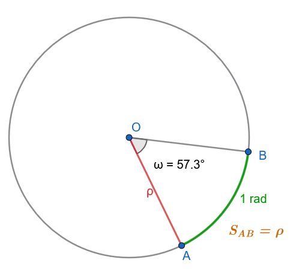
Ακτίνιο (\(1\text{ rad}\)) είναι η επίκεντρη γωνία η οποία βαίνει σε τόξο κύκλου με μήκος ίσο με την ακτίνα \(\rho\) του κύκλου.
0.1.6.2 Τύποι Μετατροπής
Αν μια γωνία είναι \(\mu^\circ\) (μοίρες) και \(\alpha\text{ rad}\) (ακτίνια), ισχύει ο τύπος μετατροπής: \[\frac{\mu}{180} = \frac{\alpha}{\pi}\]
Μετατροπή από μοίρες σε ακτίνια (\(\mu \to \alpha\)): \(\alpha = \dfrac{\mu \cdot \pi}{180}\)
Μετατροπή από ακτίνια σε μοίρες (\(\alpha \to \mu\)): \(\mu = \dfrac{\alpha \cdot 180}{\pi}\)
0.1.6.3 Παραδείγματα Μετατροπής
Μετατροπή \(60^\circ\) σε \(\text{rad}\): \[\alpha = \frac{60 \cdot \pi}{180} = \frac{\pi}{3}\text{ rad}\]
Μετατροπή \(\dfrac{5\pi}{6}\text{ rad}\) σε μοίρες: \[\mu = \frac{\dfrac{5\pi}{6} \cdot 180}{\pi} = 5 \cdot 30 = 150^\circ\]
0.1.6.4 Πίνακας Τριγωνομετρικών Αριθμών Βασικών Γωνιών
(Πρώτη στήλη σε μοίρες, τελευταία στήλη σε ακτίνια):
| Γωνία \(\omega\) (\(\mu^\circ\)) | \(\eta\mu\omega\) | \(\sigma\upsilon\nu\omega\) | \(\epsilon\phi\omega\) | \(\sigma\phi\omega\) | Γωνία \(\omega\) (\(\alpha\text{ rad}\)) |
|---|---|---|---|---|---|
| \(0^\circ\) | \(0\) | \(1\) | \(0\) | Δεν ορίζεται | \(0\) |
| \(30^\circ\) | \(\dfrac{1}{2}\) | \(\dfrac{\sqrt{3}}{2}\) | \(\dfrac{\sqrt{3}}{3}\) | \(\sqrt{3}\) | \(\dfrac{\pi}{6}\) |
| \(45^\circ\) | \(\dfrac{\sqrt{2}}{2}\) | \(\dfrac{\sqrt{2}}{2}\) | \(1\) | \(1\) | \(\dfrac{\pi}{4}\) |
| \(60^\circ\) | \(\dfrac{\sqrt{3}}{2}\) | \(\dfrac{1}{2}\) | \(\sqrt{3}\) | \(\dfrac{\sqrt{3}}{3}\) | \(\dfrac{\pi}{3}\) |
| \(90^\circ\) | \(1\) | \(0\) | Δεν ορίζεται | \(0\) | \(\dfrac{\pi}{2}\) |
0.1.7 Εφαρμογές
Εφαρμογή 1: Υπολογισμός ύψους πύργου από δύο διαφορετικές γωνίες ανύψωσης
Εκφώνηση: Ένας παρατηρητής βλέπει την κορυφή ενός πύργου υπό γωνία ανύψωσης \(30^\circ\). Προχωρώντας \(50\text{ m}\) ευθεία προς τη βάση του πύργου, βλέπει την κορυφή υπό γωνία ανύψωσης \(45^\circ\). Να υπολογιστεί το ύψος \(h\) του πύργου.
Λύση:
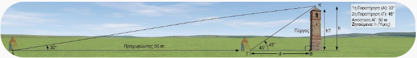
Έστω \(h\) το ύψος του πύργου και \(d\) η απόσταση του δεύτερου σημείου παρατήρησης από τη βάση του πύργου.
Από το πρώτο ορθογώνιο τρίγωνο (με γωνία \(45^\circ\)): \[\epsilon\phi 45^\circ = \frac{h}{d} \implies 1 = \frac{h}{d} \implies d = h\]
Από το δεύτερο ορθογώνιο τρίγωνο (με γωνία \(30^\circ\) και συνολική απόσταση \(d + 50\)): \[\epsilon\phi 30^\circ = \frac{h}{d + 50} \implies \frac{\sqrt{3}}{3} = \frac{h}{h + 50}\]
Επιλύουμε ως προς \(h\): \[\sqrt{3}(h + 50) = 3h \iff 50\sqrt{3} = 3h - \sqrt{3}h \iff h(3 - \sqrt{3}) = 50\sqrt{3}\] \[h = \frac{50\sqrt{3}}{3 - \sqrt{3}} = \frac{50\sqrt{3}(3 + \sqrt{3})}{9 - 3} = \frac{150\sqrt{3} + 150}{6} = 25(\sqrt{3} + 1)\text{ m} \approx 68{,}3\text{ m}\]
Εφαρμογή 2:
Υπολογισμός τριγωνομετρικών αριθμών της γωνίας \(1140^\circ\)
Λύση:
Διαιρούμε το \(1140\) με το \(360\): \[1140^\circ = 3 \cdot 360^\circ + 60^\circ\]
Επειδή οι τριγωνομετρικοί αριθμοί επαναλαμβάνονται κάθε \(360^\circ\):
\(\eta\mu 1140^\circ = \eta\mu(3 \cdot 360^\circ + 60^\circ) = \eta\mu 60^\circ = \dfrac{\sqrt{3}}{2}\)
\(\sigma\upsilon\nu 1140^\circ = \sigma\upsilon\nu(3 \cdot 360^\circ + 60^\circ) = \sigma\upsilon\nu 60^\circ = \dfrac{1}{2}\)
\(\epsilon\phi 1140^\circ = \epsilon\phi(3 \cdot 360^\circ + 60^\circ) = \epsilon\phi 60^\circ = \sqrt{3}\)
\(\sigma\phi 1140^\circ = \sigma\phi(3 \cdot 360^\circ + 60^\circ) = \sigma\phi 60^\circ = \dfrac{\sqrt{3}}{3}\)
Εφαρμογή 3:
Υπολογισμός τριγωνομετρικών αριθμών της γωνίας \(\dfrac{121\pi}{6}\text{ rad}\)
Λύση:
Διασπούμε το κλάσμα \(\dfrac{121\pi}{6}\): \[\frac{121\pi}{6} = \frac{120\pi + \pi}{6} = 20\pi + \frac{\pi}{6} = 10 \cdot (2\pi) + \frac{\pi}{6}\]
Επειδή η περίοδος είναι \(2\pi\text{ rad}\) (πλήρεις περιστροφές):
\(\eta\mu\left(\dfrac{121\pi}{6}\right) = \eta\mu\left(10 \cdot 2\pi + \dfrac{\pi}{6}\right) = \eta\mu\left(\dfrac{\pi}{6}\right) = \dfrac{1}{2}\)
\(\sigma\upsilon\nu\left(\dfrac{121\pi}{6}\right) = \sigma\upsilon\nu\left(10 \cdot 2\pi + \dfrac{\pi}{6}\right) = \sigma\upsilon\nu\left(\dfrac{\pi}{6}\right) = \dfrac{\sqrt{3}}{2}\)
\(\epsilon\phi\left(\dfrac{121\pi}{6}\right) = \epsilon\phi\left(10 \cdot 2\pi + \dfrac{\pi}{6}\right) = \epsilon\phi\left(\dfrac{\pi}{6}\right) = \dfrac{\sqrt{3}}{3}\)
\(\sigma\phi\left(\dfrac{121\pi}{6}\right) = \sigma\phi\left(10 \cdot 2\pi + \dfrac{\pi}{6}\right) = \sigma\phi\left(\dfrac{\pi}{6}\right) = \sqrt{3}\)
0.1.8 Ασκήσεις και Προβλήματα
0.1.8.1 Θέμα Α: Τριγωνομετρικοί Αριθμοί Οξείας Γωνίας & Σύστημα Συντεταγμένων
Σε ορθογώνιο τρίγωνο \(A B \Gamma\) (\(\hat{A} = 90^\circ\)) δίνεται ότι \(β = 6\text{ cm}\) και \(γ = 8\text{ cm}\). Να υπολογιστούν οι τριγωνομετρικοί αριθμοί της γωνίας \(\hat{B}\).
Η τελική πλευρά μιας γωνίας \(\omega\) διέρχεται από το σημείο \(M(-3, 4)\). Να υπολογιστεί η απόσταση \(\rho\) και οι \(4\) τριγωνομετρικοί αριθμοί της γωνίας \(\omega\).
Η τελική πλευρά της γωνίας \(\omega\) διέρχεται από το σημείο \(P(5, -12)\). Να βρεθούν οι τριγωνομετρικοί αριθμοί της \(\omega\).
0.1.8.2 Θέμα Β: Γωνίες \(>360^\circ\) και Αρνητικές Γωνίες
Να υπολογιστούν οι τριγωνομετρικοί αριθμοί των γωνιών: \[\alpha)\ 750^\circ, \quad \beta)\ 1470^\circ\]
Να υπολογιστούν οι τριγωνομετρικοί αριθμοί των αρνητικών γωνιών: \[\alpha)\ -300^\circ, \quad \beta)\ -405^\circ\]
Να απλοποιηθεί η παράσταση: \[A = \eta\mu(720^\circ + \omega) + \sigma\upsilon\nu(1080^\circ - \omega) + \epsilon\phi(360^\circ + \omega)\]
0.1.8.3 Θέμα Γ: Τριγωνομετρικός Κύκλος & Πρόσημα
Να βρεθεί το πρόσημο των παραστάσεων: \[\alpha)\ A = \eta\mu 135^\circ \cdot \sigma\upsilon\nu 210^\circ \cdot \epsilon\phi 300^\circ, \quad \beta)\ B = \eta\mu\left(\frac{7\pi}{6}\right) \cdot \sigma\upsilon\nu\left(\frac{5\pi}{4}\right)\]
Αν \(90^\circ < \omega < 180^\circ\) και \(\eta\mu\omega = \dfrac{3}{5}\), να υπολογιστούν οι υπόλοιποι τριγωνομετρικοί αριθμοί της γωνίας \(\omega\).
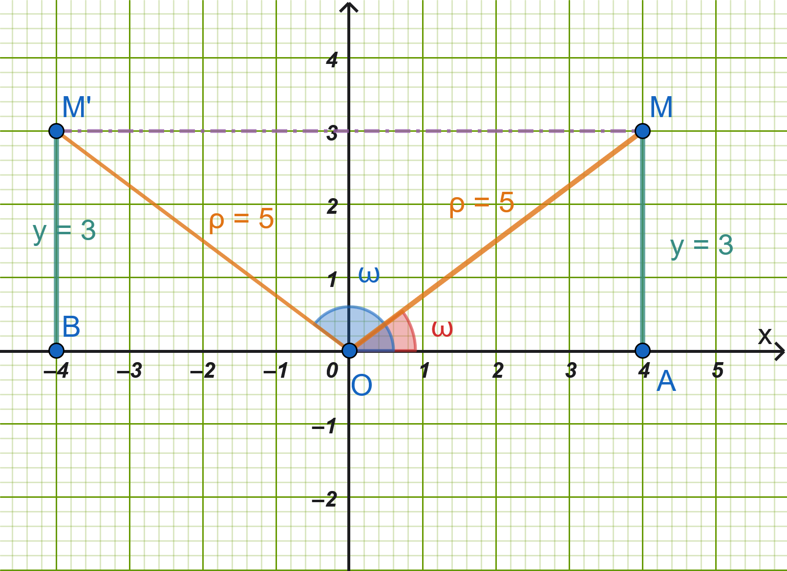
Υπόδειξη
Υπάρχουν δύο γωνίες με το ίδιο ημίτονο, μια στο \(1^ο\) τεταρτημόριο και μια στο \(2^ο\).
Αφού η γωνία μας βρίσκεται \(90^ο \le ω \le 180^o\), σημαίνει ότι \(\hat ω=\widehat{AOM'}\) και Μ’ το συμμετρικό του M ως προς τον άξονα Oy
Από το ορθογώνιο τρίγωνο προκύπτει ότι \(x=4\)
Άρα \(συνω=\dfrac{x}{ρ}=\dfrac{-4}{5}\)
- Αν \(180^\circ < \omega < 270^\circ\) και \(\sigma\upsilon\nu\omega = -\dfrac{12}{13}\), να υπολογιστούν οι \(\epsilon\phi\omega\) και \(\sigma\phi\omega\).
Σκεφτείτε παρόμοια με την άσκηση 8.
0.1.8.4 Θέμα Δ: Άξονας Εφαπτομένων
- Να κατασκευαστεί γραφικά στον τριγωνομετρικό κύκλο γωνία \(\omega \in (0, 90^\circ)\) της οποίας η εφαπτομένη είναι \(\epsilon\phi\omega = 2\).
\(εφω=\dfrac{y}{x}=\dfrac{2}{1}=2\)
- Να εξεταστεί αν υπάρχει γωνία \(\omega\) για την οποία ισχύει \(ημω = 2\) ή \(εφω = 5\). Να αιτιολογηθεί η απάντηση με βάση τον τριγωνομετρικό κύκλο και τον άξονα των εφαπτομένων.
0.1.8.5 Θέμα Ε: Ακτίνια (\(\text{rad}\)) & Μετατροπές
Να μετατραπούν σε ακτίνια (\(\text{rad}\)) οι γωνίες: \[15^\circ, \quad 120^\circ, \quad 225^\circ, \quad 315^\circ\]
Να μετατραπούν σε μοίρες οι γωνίες: \[\frac{\pi}{12}\text{ rad}, \quad \frac{3\pi}{4}\text{ rad}, \quad \frac{7\pi}{6}\text{ rad}, \quad \frac{11\pi}{3}\text{ rad}\]
Να υπολογιστούν οι τριγωνομετρικοί αριθμοί της γωνίας \(\omega = \dfrac{25\pi}{4}\text{ rad}\).
Να υπολογιστεί η τιμή της παράστασης: \[S = \eta\mu\left(\frac{13\pi}{6}\right) + \sigma\upsilon\nu\left(\frac{17\pi}{3}\right) - \epsilon\phi\left(\frac{9\pi}{4}\right)\]
0.1.8.6 Θέμα ΣΤ: Σύνθετα Προβλήματα & Εφαρμογές
- Μήκος Τόξου: Ένα τόξο κύκλου ακτίνας \(R = 10\text{ cm}\) αντιστοιχεί σε επίκεντρη γωνία \(\omega = 120^\circ\). Να υπολογιστεί το μήκος \(S\) του τόξου σε \(\text{cm}\).
μετατρέψτε τις \(120^ο\) σε ακτίνια. \(S=αρ\) ______________________
Πρόβλημα Πλοίου: Ένα πλοίο βρίσκεται σε απόσταση \(200\text{ m}\) από τη βάση ενός φάρου ύψους \(h\). Η γωνία ανύψωσης της κορυφής του φάρου από το πλοίο είναι \(30^\circ\). Να βρεθεί το ύψος του φάρου.
Πρόβλημα Αερόστατου: Δύο παρατηρητές \(A\) και \(B\) βρίσκονται σε ευθεία γραμμή στη γη σε απόσταση \(1000\text{ m}\) μεταξύ τους. Παρατηρούν ένα αερόστατο που βρίσκεται ανάμεσά τους υπό γωνίες ανύψωσης \(45^\circ\) και \(60^\circ\) αντίστοιχα. Να υπολογιστεί το ύψος του αερόστατου από το έδαφος.
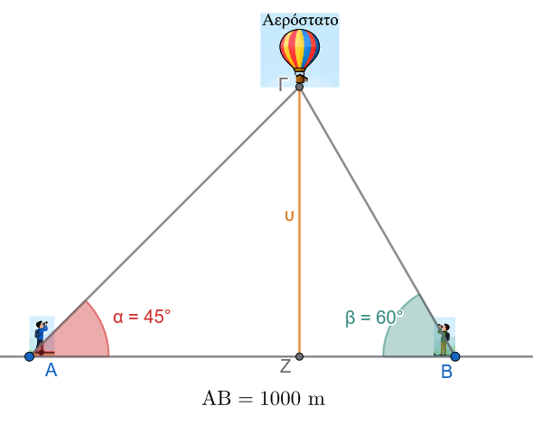
Υπόδειξη
\(εφ45^ο=\dfrac{υ}{ΑΖ} \implies AZ= .............................\)
\(εφ60^ο=\dfrac{υ}{ΖB} \implies ZB= .............................\)
\(AB=AZ+ZB \implies ................................\)
- Υπολογισμός:
Να υπολογίσετε την τιμή της παράστασης, χωρίς τη χρήση υπολογιστή τσέπης:
\[A = \frac{\sigma\upsilon\nu 420^\circ - \eta\mu 225^\circ \cdot \sigma\upsilon\nu(-45^\circ)}{\epsilon\phi 315^\circ}\]
Λύση
Υπολογίζουμε ξεχωριστά κάθε τριγωνομετρικό αριθμό ανάγοντας τις γωνίες στο \(1^\circ\) τεταρτημόριο:
Για το \(\sigma\upsilon\nu 420^\circ\):
Αφαιρούμε έναν πλήρη κύκλο (\(360^\circ\)): \[\sigma\upsilon\nu 420^\circ = \sigma\upsilon\nu(360^\circ + 60^\circ) = \sigma\upsilon\nu 60^\circ = \frac{1}{2}\]
Για το \(\eta\mu 225^\circ\):
Η γωνία \(225^\circ\) βρίσκεται στο \(3^\circ\) τεταρτημόριο, όπου το ημίτονο είναι αρνητικό: \[\eta\mu 225^\circ = \eta\mu(180^\circ + 45^\circ) = -\eta\mu 45^\circ = -\frac{\sqrt{2}}{2}\]
Για το \(\sigma\upsilon\nu(-45^\circ)\):
Το συνημίτονο είναι άρτια συνάρτηση (\(\sigma\upsilon\nu(-\theta) = \sigma\upsilon\nu \theta\)): \[\sigma\upsilon\nu(-45^\circ) = \sigma\upsilon\nu 45^\circ = \frac{\sqrt{2}}{2}\]
Για την \(\epsilon\phi 315^\circ\):
Η γωνία \(315^\circ\) βρίσκεται στο \(4^\circ\) τεταρτημόριο, όπου η εφαπτομένη είναι αρνητική: \[\epsilon\phi 315^\circ = \epsilon\phi(360^\circ - 45^\circ) = -\epsilon\phi 45^\circ = -1\]
Αντικατάσταση στην παράσταση
Αντικαθιστούμε τις τιμές που βρήκαμε στην αρχική παράσταση:
\[A = \frac{\dfrac{1}{2} - \left(-\dfrac{\sqrt{2}}{2}\right) \cdot \left(\dfrac{\sqrt{2}}{2}\right)}{-1}\]
Υπολογίζουμε το γινόμενο στον αριθμητή: \[\left(-\frac{\sqrt{2}}{2}\right) \cdot \left(\frac{\sqrt{2}}{2}\right) = -\frac{(\sqrt{2})^2}{4} = -\frac{2}{4} = -\frac{1}{2}\]
Επομένως, ο αριθμητής γίνεται: \[\frac{1}{2} - \left(-\frac{1}{2}\right) = \frac{1}{2} + \frac{1}{2} = 1\]
Τελικά: \[A = \frac{1}{-1} = -1\]
Γεωμετρική Εφαρμογή: Σε ισοσκελές τρίγωνο \(A B \Gamma\) (\(A B = A \Gamma = 10\text{ cm}\)) η γωνία της κορυφής είναι \(\hat{A} = 120^\circ\). Να υπολογιστεί το μήκος της βάσης \(B \Gamma\) και το εμβαδόν του τριγώνου.
Απόσταση : Στο παρακάτω σχήμα να υπολογίσετε την απόσταση ΒΔ.
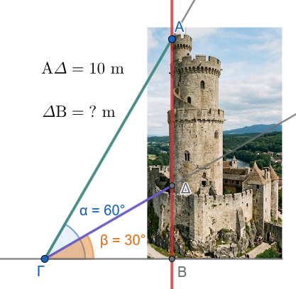
Υπόδειξη
\(εφ30^ο=\dfrac{ΒΔ}{ΒΓ} \implies BΓ= ................\)
\(εφ60^ο=\dfrac{ΒΔ+ΔΑ}{ΒΓ} \implies BΓ= ................\)
\(ΒΓ=ΒΓ \implies ....................\)
0.1.9 …. και ασκήσεων συνέχεια
Άσκηση 1 (Ορθογώνια Τρίγωνα & Τριγωνομετρία)
Σε τρίγωνο \(AB\Gamma\) φέρουμε το ύψος \(A\Delta \perp B\Gamma\). Δίνεται ότι στο ορθογώνιο τρίγωνο \(AB\Delta\) η γωνία είναι \(\widehat{B} = 45^\circ\) και η υποτείνουσα \(AB = 8\sqrt{2}\). Στο ορθογώνιο τρίγωνο \(A\Delta\Gamma\), η πλευρά \(\Delta\Gamma\) έχει μήκος \(8\sqrt{3}\).
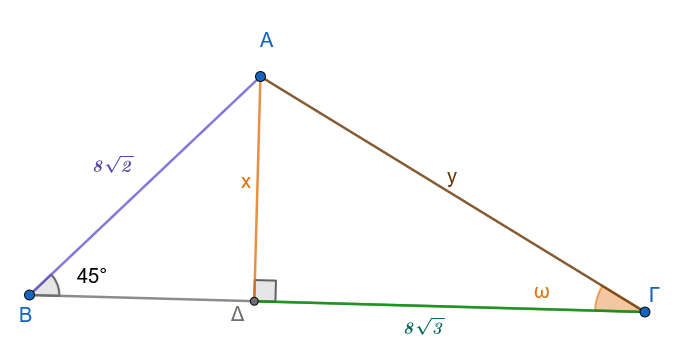
- Να υπολογίσετε το ύψος \(x = A\Delta\).
- Να υπολογίσετε την πλευρά \(y = A\Gamma\).
- Να υπολογίσετε τη γωνία \(\omega = \widehat{A\Gamma\Delta}\).
Άσκηση 2 (Επίλυση Τριγώνου με Ύψος)
Δίνεται τρίγωνο \(AB\Gamma\) με γωνίες \(\widehat{B} = 45^\circ\), \(\widehat{\Gamma} = 30^\circ\) και πλευρά \(B\Gamma = 6(\sqrt{3} + 1)\).
Φέρνοντας το ύψος \(A\Delta \perp B\Gamma\), να υπολογίσετε τα μήκη των πλευρών \(AB\) και \(A\Gamma\).
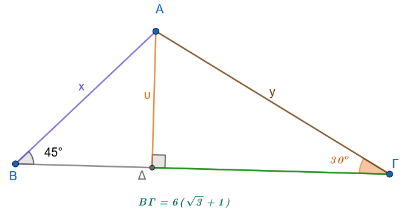
Υπόδειξη
\(εφ45^ο=\dfrac{ΑΔ}{ΒΔ} \implies BΔ= ................\)
\(εφ30^ο=\dfrac{ΑΔ}{ΔΓ} \implies ΔΓ= ................\)
\(ΒΓ=ΒΔ+ΔΓ \implies .................... ΑΔ=υ= ......\)
Τώρα μπορούμε να υπολογίσουμε τις πλευρές………
Άσκηση 3 (Μήκος Τόξου & Ακτίνια: \(s = \alpha \cdot \rho\))
Μια επίκεντρη γωνία \(\omega\) βαίνει σε τόξο μήκους \(s = 12\text{ cm}\). Να εκφράσετε τη γωνία \(\omega\) σε ακτίνια (\(\text{rad}\)), αν η ακτίνα του κύκλου είναι:
\(\rho = 2\text{ cm}\)
\(\rho = 3\text{ cm}\)
\(\rho = 4\text{ cm}\)
Άσκηση 4 (Μετατροπή Μοιρών σε Ακτίνια)
Να εκφράσετε σε \(\text{rad}\) τις παρακάτω γωνίες:
\(45^\circ\)
\(150^\circ\)
\(1080^\circ\)
\(-1260^\circ\)
Άσκηση 5 (Μετατροπή Ακτινίων σε Μοίρες)
Να μετατρέψετε σε μοίρες τις παρακάτω γωνίες:
\(\dfrac{\pi}{12}\text{ rad}\)
\(\dfrac{7\pi}{4}\text{ rad}\)
\(\dfrac{53\pi}{6}\text{ rad}\)
\(50\text{ rad}\)
Άσκηση 6 (Τριγωνομετρικοί Αριθμοί Μεγάλων Γωνιών)
Να υπολογίσετε τους τριγωνομετρικούς αριθμούς (\(\eta\mu, \sigma\upsilon\nu, \epsilon\phi, \sigma\phi\)) των παρακάτω γωνιών:
\(750^\circ\)
\(1500^\circ\)
\(2220^\circ\)
\(2880^\circ\)
Άσκηση 7 (Εφαρμογή Τριγωνομετρίας σε Πρόβλημα Ύψους)
Από δύο σημεία \(A\) και \(B\) που βρίσκονται στο ίδιο οριζόντιο έδαφος και απέχουν μεταξύ τους απόσταση \(d = 600\text{ m}\), παρατηρείται η κορυφή \(K\) ενός πύργου τηλεπικοινωνιών \(K\Delta\) (όπου \(K\Delta \perp AB\) και το \(\Delta\) βρίσκεται στην ευθεία \(AB\), ανάμεσα στα \(A\) και \(B\)). Από το σημείο \(B\), η κορυφή \(K\) παρατηρείται υπό σταθερή γωνία ανύψωσης \(60^\circ\).
Να εκφράσετε το ύψος \(h = K\Delta\) του πύργου συναρτήσει της γωνίας ανύψωσης \(\omega = \widehat{KA\Delta}\) από το σημείο \(A\).
Να βρείτε το ύψος \(h\), αν \(\omega = 30^\circ\).
Πόση είναι η γωνία \(\omega\), αν το ύψος είναι \(h = 300\sqrt{3}\text{ m}\);
Δείτε την άσκηση με το αερόστατο.
Άσκηση 8 (Γεωμετρικός Υπολογισμός Ημιτόνου Μισής Γωνίας)
Θεωρούμε ημικύκλιο διαμέτρου \(AB = 2\) (άρα ακτίνα \(\rho = 1\)) με κέντρο \(O\). Έστω σημείο \(\Gamma\) του ημικυκλίου τέτοιο ώστε \(\widehat{BO\Gamma} = 60^\circ\) (άρα \(\widehat{BA\Gamma} = 30^\circ\)). Φέρουμε τη διχοτόμο της γωνίας \(\widehat{BA\Gamma}\), η οποία τέμνει το ημικύκλιο στο σημείο \(\Delta\), οπότε \(\widehat{BA\Delta} = 15^\circ\).
Να δείξετε ότι \((B\Gamma) = 1\) και \((A\Gamma) = \sqrt{3}\).
Στο ορθογώνιο τρίγωνο \(AB\Delta\) (\(\widehat{A\Delta B} = 90^\circ\)), να εκφράσετε την πλευρά \((B\Delta)\) συναρτήσει του \(\eta\mu 15^\circ\).
Χρησιμοποιώντας το ύψος OE στο τρίγωνο \(OBΓ\), να υπολογίσετε την ακριβή τιμή του μήκους \((B\Delta)\).
Να προσδιορίσετε την ακριβή τιμή του \(\eta\mu 15^\circ\).
Ποιων άλλων γωνιών μπορείτε να υπολογίσετε το ημίτονο αν συνεχιστεί η διαδικασία διχοτόμησης;
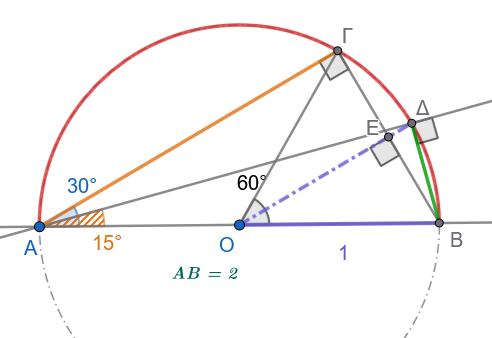
Λύση - Υπόδειξη
Οι γωνίες \(\widehat {AΓΒ}=90^ο\) και \(\widehat {ΑΔΒ}=90^ο \ \ \ \ \ (1)\) γιατί βαίνουν σε ημικύκλιο
Το τρίγωνο ΟΓΒ είναι ισόπλευρο, άρα ΑΒ=ΟΓ=ΒΓ=1.
Από το πυθαγόρειο θεώρημα στο τρίγωνο ΑΓΒ προκύπτει ότι \(ΑΓ=\sqrt{3}\)
Στο τρίγωνο ΟΒΓ το ΕΒ=0,5 και από το πυθαγόρειο θεώρημα στο τρίγωνο ΟΕΒ προκύπτει \(ΟΕ=\dfrac{\sqrt{3}}{2}\), Άρα το \(ΕΔ=1-ΟΕ=1-\dfrac{\sqrt{3}}{2}\). Από το ορθογώνιο τρίγωνο ΒΔΕ μπορούμε να υπολογίσουμε το τμήμα \(ΒΔ^2=ΒΕ^2+ΕΔ^2= ......... . ...ΒΔ= ........\)
Τώρα μπορούμε να υπολογίσουμε το \(ημ15^ο=\dfrac{ΔΒ}{ΑΒ}\) από το ορθογώνιο τρίγωνο ΑΔΒ
Άσκηση 9 (Υπολογισμός Εμβαδού & Περιμέτρου)
Σε ορθογώνιο τρίγωνο \(AB\Gamma\) (\(\widehat{B} = 90^\circ\)), επί της υποτείνουσας \(A\Gamma\) ή της πλευράς \(B\Gamma\) θεωρούμε σημείο \(\Delta \in B\Gamma\) τέτοιο ώστε \(\widehat{BA\Delta} = 30^\circ\) και \(\widehat{\Delta A\Gamma} = 15^\circ\) (άρα \(\widehat{A} = 45^\circ\) και \(\widehat{\Gamma} = 45^\circ\)). Δίνεται ότι η κάθετη πλευρά είναι \(AB = 6\).
Να υπολογίσετε τα μήκη των τμημάτων \(B\Delta\) και \(A\Delta\).
Να βρείτε το μήκος της πλευράς \(B\Gamma\) και του τμήματος \(\Delta\Gamma\).
Να υπολογίσετε την περίμετρο και το εμβαδόν του τριγώνου \(A\Delta\Gamma\).
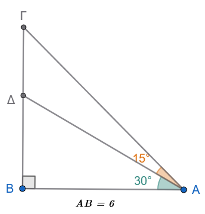
Λύση - Υπόδειξη
Προφανώς το τρίγωνο ΑΒΓ είναι ορθογώνιο ισοσκελές και άρα \(ΑΒ=ΒΓ=6 \ \ \ \ \ \ (1)\)
Από το ορθογώνιο τρίγωνο ΑΒΔ υπολογίζουμε την \(ΒΔ=6εφ30^ο=2\sqrt{3} \ \ \ \ \ (2)\) και άρα \(ΔΓ=ΒΓ-ΒΔ=6-2\sqrt{3} \ \ \ \ \ \ (3)\)
Από το ορθογώνιο τρίγωνο ΑΒΔ υπολογίζουμε την \(AΔ=\dfrac{6}{συν30^ο}=4\sqrt{3} \ \ \ \ \ (4)\)
Από το ορθογώνιο τρίγωνο ΑΒΓ υπολογίζουμε την \(AΓ^2=6^2+6^2 \implies ΑΓ=6\sqrt{2} \ \ \ \ \ (5)\)
Άρα Περίμετρος= ……………………… και Εμβαδόν=\(\dfrac{ΔΓ\times ΒΔ}{2}= ............\)
Άσκηση 10 (Κυκλική Κίνηση & Γωνιακή Ταχύτητα)
Η ελάχιστη γραμμική ταχύτητα που μπορεί να διακρίνει το ανθρώπινο μάτι στην άκρη ενός δείκτη είναι \(v = 0{,}5\text{ mm/s}\).
Να βρείτε τη γωνιακή ταχύτητα \(\omega\) (σε \(\text{rad/s}\)) του ωροδείκτη ενός αναλογικού ρολογιού (ο οποίος εκτελεί \(1\) πλήρη περιστροφή κάθε \(12\) ώρες).
Να υπολογίσετε πόσο μήκος πρέπει να έχει ο ωροδείκτης ώστε να μπορούμε να αντιληφθούμε άμεσα με το μάτι την κίνηση του άκρου του.
Λύση
Δεδομένα:
Ελάχιστη γραμμική ταχύτητα: \(v = 0{,}5 \text{ mm/s} = 0{,}5 \times 10^{-3} \text{ m/s} = 5 \times 10^{-4} \text{ m/s}\)
Περίοδος περιστροφής ωροδείκτη: \(T = 12 \text{ ώρες}\)
1. Υπολογισμός της γωνιακής ταχύτητας \(\omega\) του ωροδείκτη
Η γωνιακή ταχύτητα δίνεται από τον τύπο:
\[\omega = \frac{2\pi}{T}\]
Μετατρέπουμε την περίοδο \(T\) από ώρες σε δευτερόλεπτα (\(\text{s}\)):
\[T = 12 \text{ ώρες} = 12 \times 3600 \text{ s} = 43.200 \text{ s}\]
Αντικαθιστούμε στον τύπο της γωνιακής ταχύτητας:
\[\omega = \frac{2\pi}{43.200} = \frac{\pi}{21.600} \text{ rad/s}\]
Υπολογίζοντας αριθμητικά:
\[\omega \approx \frac{3{,}14159}{21.600} \approx 1{,}454 \times 10^{-4} \text{ rad/s}\]
2. Υπολογισμός του ελάχιστου μήκους \(R\) του ωροδείκτη
Η σχέση γραμμικής (\(v\)) και γωνιακής ταχύτητας (\(\omega\)) είναι:
\[v = \omega \cdot R \implies R = \frac{v}{\omega}\]
Αντικαθιστούμε τις τιμές:
\[R = \frac{0{,}5 \text{ mm/s}}{\dfrac{\pi}{21.600} \text{ rad/s}} = \frac{0{,}5 \times 21.600}{\pi} = \dfrac{10.800}{\pi} \text{ mm}\]
Υπολογίζοντας αριθμητικά:
\[R \approx \frac{10.800}{3{,}14159} \approx 3.437{,}75 \text{ mm} \approx 3{,}44 \text{ μέτρα}\]
Σύνοψη Αποτελεσμάτων:
Γωνιακή ταχύτητα: \(\omega = \dfrac{\pi}{21.600} \text{ rad/s} \approx 1{,}45 \times 10^{-4} \text{ rad/s}\)
Ελάχιστο μήκος ωροδείκτη: \(R \approx 3.438 \text{ mm} \approx 3{,}44 \text{ m}\)
1 ΔΙΑΓΩΝΙΣΜΑ ΑΞΙΟΛΟΓΗΣΗΣ: ΤΡΙΓΩΝΟΜΕΤΡΙΚΟΙ ΑΡΙΘΜΟΙ
Μάθημα: Άλγεβρα Β’ Γενικού Λυκείου
Διάρκεια: 60 λεπτά
1.0.1 ΘΕΜΑ Α (Θεωρία & Ερωτήσεις Κατανόησης - 25 Μονάδες)
Α1. Έστω γωνία \(\omega\) με αρχική πλευρά τον θετικό ημιάξονα \(Ox\) και \(M(x,y)\) ένα σημείο της τελικής της πλευράς \(Ot\), που απέχει από την αρχή των αξόνων \(O(0,0)\) απόσταση \(\rho = \sqrt{x^2+y^2} > 0\).
Να ορίσετε τους \(4\) τριγωνομετρικούς αριθμούς της γωνίας \(\omega\) (\(\eta\mu\omega, \sigma\upsilon\nu\omega, \epsilon\phi\omega, \sigma\phi\omega\)). (4 μονάδες)
Πώς ορίζεται ο τριγωνομετρικός κύκλος και ποιες είναι οι συντεταγμένες του σημείου \(M(x,y)\) τομής της τελικής πλευράς της γωνίας \(\omega\) με αυτόν; (4 μονάδες)
Α2. Να χαρακτηρίσετε τις παρακάτω προτάσεις ως Σωστό (Σ) ή Λάθος (Λ): (10 μονάδες)
Για κάθε γωνία \(\omega\) ισχύει ότι \(-1 \le \eta\mu\omega \le 1\) και \(-1 \le \sigma\upsilon\nu\omega \le 1\).
Η εφαπτομένη γωνίας \(90^\circ\) ισούται με \(0\).
Γωνίες της μορφής \(k \cdot 360^\circ + \omega\), με \(k \in \mathbb{Z}\), έχουν τους ίδιους τριγωνομετρικούς αριθμούς με την γωνία \(\hatω\).
Αν \(90^\circ < \omega < 180^\circ\) (2ο τεταρτημόριο), τότε \(\eta\mu\omega > 0\) και \(\sigma\upsilon\nu\omega < 0\).
Γωνία \(1\text{ rad}\) είναι η επίκεντρη γωνία που βαίνει σε τόξο μήκους ίσου με την ακτίνα του κύκλου.
Α3. Να μετατρέψετε τη γωνία \(\mu = 135^\circ\) σε ακτίνια (\(\text{rad}\)) και τη γωνία \(\alpha = \dfrac{4\pi}{3}\text{ rad}\) σε μοίρες. (7 μονάδες)
1.0.2 ΘΕΜΑ Β (Υπολογισμοί & Περιοδικότητα - 25 Μονάδες)
Β1. Στο καρτεσιανό επίπεδο \(Oxy\), η τελική πλευρά μιας γωνίας \(\omega\) διέρχεται από το σημείο \(M(-3, 4)\).
Να υπολογίσετε την απόσταση \(\rho = (OM)\). (3 μονάδες)
Να βρείτε τους \(4\) τριγωνομετρικούς αριθμούς της γωνίας \(\omega\). (6 μονάδες)
Β2. Να υπολογίσετε την τιμή των παραστάσεων:
\(A = \eta\mu 750^\circ + \sigma\upsilon\nu 1140^\circ - \epsilon\phi 405^\circ\) (8 μονάδες)
\(B = \eta\mu\left(\dfrac{25\pi}{6}\right) \cdot \sigma\upsilon\nu\left(\dfrac{13\pi}{3}\right) + \sigma\phi\left(\dfrac{9\pi}{4}\right)\) (8 μονάδες)
1.0.3 ΘΕΜΑ Γ (Θεμελιώδεις Σχέσεις & Πρόσημα - 25 Μονάδες)
Δίνεται γωνία \(\omega\) με \(90^\circ < \omega < 180^\circ\) (2ο τεταρτημόριο) για την οποία ισχύει: \[\eta\mu\omega = \frac{4}{5}\]
Γ1. Να αιτιολογήσετε το πρόσημο του \(\sigma\upsilon\nu\omega\) και να υπολογίσετε την τιμή του. (8 μονάδες)
Γ2. Να υπολογίσετε τις τιμές της εφαπτομένης (\(\epsilon\phi\omega\)) και της συνεφαπτομένης (\(\sigma\phi\omega\)). (8 μονάδες)
Γ3. Να υπολογίσετε την τιμή της παράστασης: \[K = \frac{5\cdot\sigma\upsilon\nu\omega + 3\cdot\epsilon\phi\omega}{4\cdot\sigma\phi\omega + 1}\] (9 μονάδες)
1.0.4 ΘΕΜΑ Δ (Πρόβλημα Εφαρμογής & Γεωμετρία - 25 Μονάδες)
Ένας παρατηρητής βλέπει την κορυφή ενός καμπαναριού/πύργου από σημείο \(A\) του εδάφους υπό γωνία ανύψωσης \(30^\circ\). Προχωρώντας ευθεία προς τη βάση του πύργου κατά \(40\text{ m}\), φτάνει σε σημείο \(B\) από το οποίο βλέπει την κορυφή υπό γωνία ανύψωσης \(45^\circ\).
Δ1. Να σχεδιάσετε το αντίστοιχο σχήμα και να εκφράσετε τις αποστάσεις των σημείων \(A\) και \(B\) από τη βάση του πύργου με τη βοήθεια του ύψους \(h\). (8 μονάδες)
Δ2. Να υπολογίσετε το ύψος \(h\) του πύργου (σε αναλυτική μορφή με ριζικά). (9 μονάδες)
Δ3. Αν ο παρατηρητής βρεθεί σε σημείο \(\Gamma\) τέτοιο ώστε η γωνία ανύψωσης να γίνει \(60^\circ\), να υπολογίσετε την απόσταση του σημείου \(\Gamma\) από τη βάση του πύργου. (8 μονάδες)
2 ΑΝΑΛΥΤΙΚΕΣ ΛΥΣΕΙΣ ΔΙΑΓΩΝΙΣΜΑΤΟΣ
2.0.1 ΘΕΜΑ Α
Α1.1: \[\eta\mu\omega = \frac{y}{\rho}, \quad \sigma\upsilon\nu\omega = \frac{x}{\rho}, \quad \epsilon\phi\omega = \frac{y}{x} \ (x \neq 0), \quad \sigma\phi\omega = \frac{x}{y} \ (y \neq 0)\]
Α1.2: Τριγωνομετρικός κύκλος είναι ο κύκλος με κέντρο \(O(0,0)\) και ακτίνα \(\rho = 1\). Η τελική πλευρά της γωνίας \(\omega\) τέμνει τον τριγωνομετρικό κύκλο στο σημείο \(M(x,y)\), όπου \(x = \sigma\upsilon\nu\omega\) (τετμημένη) και \(y = \eta\mu\omega\) (τεταγμένη).
Α2:
Σωστό (οι τιμές ημιτόνου και συνημιτόνου κυμαίνονται στο \([-1, 1]\)).
Λάθος (η εφαπτομένη των \(90^\circ\) δεν ορίζεται, διότι \(x = 0\)).
Σωστό (λόγω περιοδικότητας \(k\) πλήρων περιστροφών).
Σωστό (στο 2ο τεταρτημόριο η τεταγμένη \(y>0\) και η τετμημένη \(x<0\)).
Σωστό (από τον ορισμό του ακτινίου \(S = \alpha \cdot \rho \implies S = \rho\) για \(\alpha = 1\text{ rad}\)).
Α3:
Για \(\mu = 135^\circ\): \(\alpha = \dfrac{\mu \cdot \pi}{180} = \dfrac{135\pi}{180} = \dfrac{3\pi}{4}\text{ rad}\).
Για \(\alpha = \dfrac{4\pi}{3}\text{ rad}\): \(\mu = \dfrac{\alpha \cdot 180}{\pi} = \dfrac{\dfrac{4\pi}{3} \cdot 180}{\pi} = 4 \cdot 60 = 240^\circ\).
2.0.2 ΘΕΜΑ Β
Β1.1: \(x = -3, y = 4 \implies \rho = \sqrt{(-3)^2 + 4^2} = \sqrt{9 + 16} = \sqrt{25} = 5\).
Β1.2:
\(\eta\mu\omega = \dfrac{y}{\rho} = \dfrac{4}{5}\)
\(\sigma\upsilon\nu\omega = \dfrac{x}{\rho} = -\dfrac{3}{5}\)
\(\epsilon\phi\omega = \dfrac{y}{x} = -\dfrac{4}{3}\)
\(\sigma\phi\omega = \dfrac{x}{y} = -\dfrac{3}{4}\)
Β2.1:
\(750^\circ = 2 \cdot 360^\circ + 30^\circ \implies \eta\mu 750^\circ = \eta\mu 30^\circ = \dfrac{1}{2}\)
\(1140^\circ = 3 \cdot 360^\circ + 60^\circ \implies \sigma\upsilon\nu 1140^\circ = \sigma\upsilon\nu 60^\circ = \dfrac{1}{2}\)
\(405^\circ = 1 \cdot 360^\circ + 45^\circ \implies \epsilon\phi 405^\circ = \epsilon\phi 45^\circ = 1\)
\(A = \dfrac{1}{2} + \dfrac{1}{2} - 1 = 0\).
Β2.2:
\(\dfrac{25\pi}{6} = \dfrac{24\pi + \pi}{6} = 4\pi + \dfrac{\pi}{6} = 2 \cdot (2\pi) + \dfrac{\pi}{6} \implies \eta\mu\left(\dfrac{25\pi}{6}\right) = \eta\mu\left(\dfrac{\pi}{6}\right) = \dfrac{1}{2}\)
\(\dfrac{13\pi}{3} = \dfrac{12\pi + \pi}{3} = 4\pi + \dfrac{\pi}{3} = 2 \cdot (2\pi) + \dfrac{\pi}{3} \implies \sigma\upsilon\nu\left(\dfrac{13\pi}{3}\right) = \sigma\upsilon\nu\left(\dfrac{\pi}{3}\right) = \dfrac{1}{2}\)
\(\dfrac{9\pi}{4} = \dfrac{8\pi + \pi}{4} = 2\pi + \dfrac{\pi}{4} \implies \sigma\phi\left(\dfrac{9\pi}{4}\right) = \sigma\phi\left(\dfrac{\pi}{4}\right) = 1\)
\(B = \left(\dfrac{1}{2}\right) \cdot \left(\dfrac{1}{2}\right) + 1 = \dfrac{1}{4} + 1 = \dfrac{5}{4}\).
2.0.3 ΘΕΜΑ Γ
- Γ1: Επειδή \(90^\circ < \omega < 180^\circ\) (2ο τεταρτημόριο), το συνημίτονο είναι αρνητικό (\(\sigma\upsilon\nu\omega < 0\)).
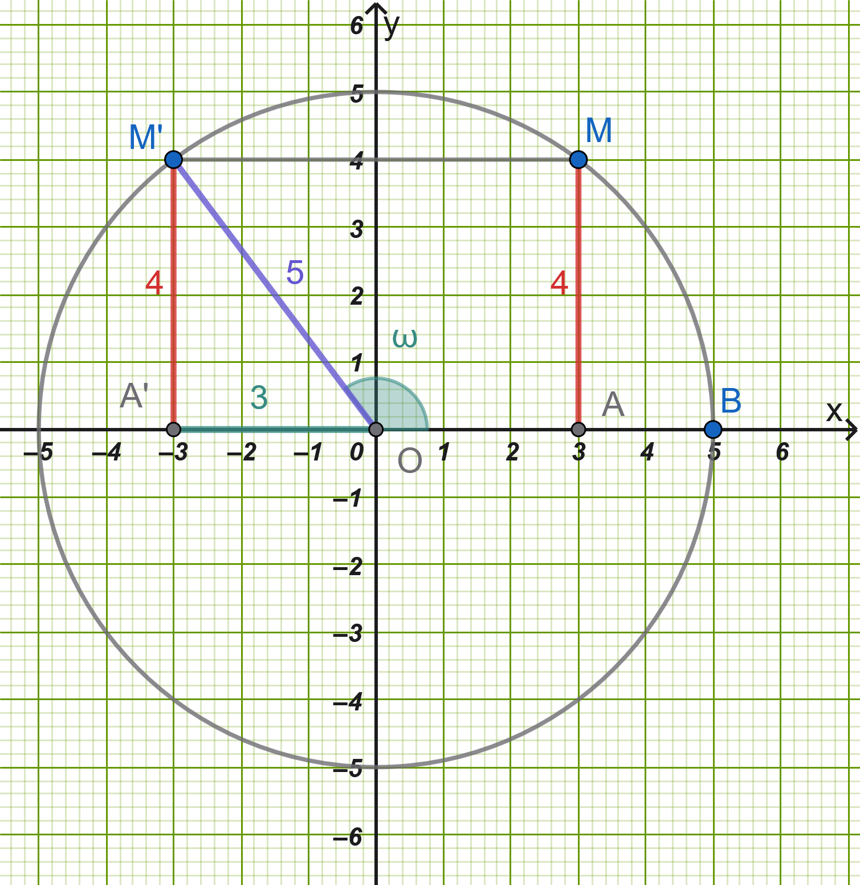
Επειδή \(συνω < 0\), έχουμε: \(συνω= -\dfrac{3}{5}\).
Γ2:
\(εφω = \dfrac{y}{x} = -\dfrac{4}{3}\)
\(σφω = \dfrac{y}{x} = -\dfrac{3}{4}\)
Γ3: Αντικαθιστούμε τις τιμές στην παράσταση \(K\): \[K = \frac{5\left(-\frac{3}{5}\right) + 3\left(-\frac{4}{3}\right)}{4\left(-\frac{3}{4}\right) + 1} = \frac{-3 - 4}{-3 + 1} = \frac{-7}{-2} = \frac{7}{2}\]
2.0.4 ΘΕΜΑ Δ
- Δ1: Έστω \(K\Delta = h\) το ύψος του πύργου (όπου \(\Delta\) η βάση) και \(d = (B\Delta)\) η απόσταση του σημείου \(B\) από τη βάση.
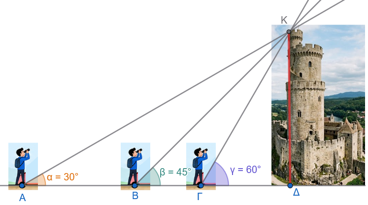
Στο ορθογώνιο τρίγωνο \(KB\Delta\) (\(\hat{B} = 45^\circ\)): \[\epsilon\phi 45^\circ = \frac{h}{d} \iff 1 = \frac{h}{d} \iff d = h\]
Στο ορθογώνιο τρίγωνο \(KA\Delta\) (\(\hat{A} = 30^\circ\) με συνολική απόσταση \((A\Delta) = 40 + h\)): \[\epsilon\phi 30^\circ = \frac{h}{40 + h} \iff \frac{\sqrt{3}}{3} = \frac{h}{40 + h}\]
Δ2: Επιλύουμε ως προς \(h\): \[\sqrt{3}(40 + h) = 3h \iff 40\sqrt{3} + \sqrt{3}h = 3h \iff h(3 - \sqrt{3}) = 40\sqrt{3}\] \[h = \frac{40\sqrt{3}}{3 - \sqrt{3}} = \frac{40\sqrt{3}(3 + \sqrt{3})}{9 - 3} = \frac{120\sqrt{3} + 120}{6} = 20(\sqrt{3} + 1)\text{ m}\]
Δ3: Έστω \(x = (\Gamma\Delta)\) η απόσταση του σημείου \(\Gamma\) από τη βάση του πύργου. Στο ορθογώνιο τρίγωνο \(K\Gamma\Delta\) (\(\hat{\Gamma} = 60^\circ\)): \[\epsilon\phi 60^\circ = \frac{h}{x} \iff \sqrt{3} = \dfrac{20(\sqrt{3} + 1)}{x} \iff x = \frac{20(\sqrt{3} + 1)}{\sqrt{3}} = \frac{20(3 + \sqrt{3})}{3}\text{ m}\]
ΚΑΛΗ ΜΕΛΕΤΗ!